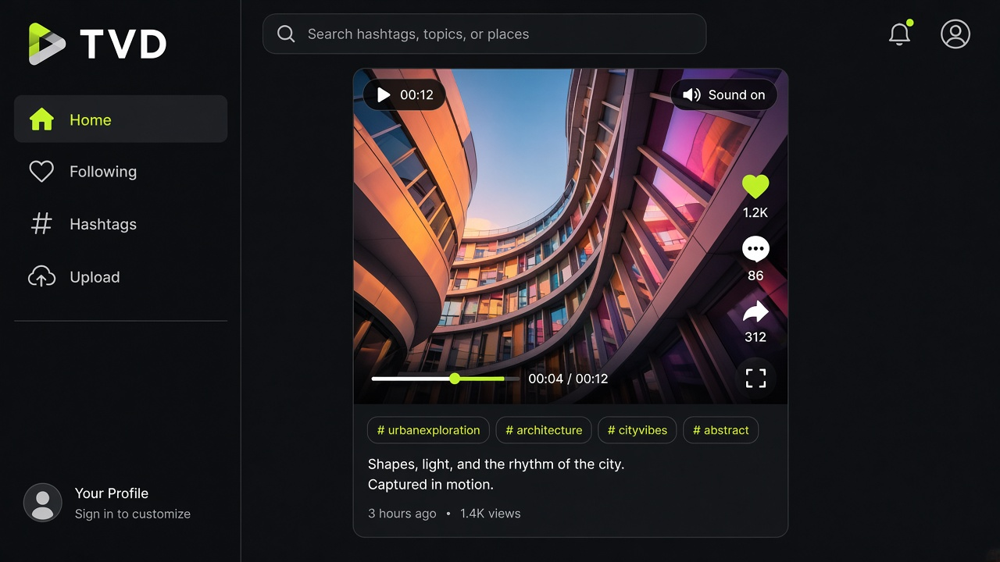

← All work
Sep 2022 — Jan 2023
TVD
A short-video platform with uploads, playback, search, hashtags, follows — and auth that was not an afterthought.
Node.js
MySQL
PHP
JavaScript
REST APIs

Problem
Media apps fail on the boring path: large uploads, a feed that stays fresh, and accounts that cannot be walked into. TVD had to do all three.
Approach
- Full-stack upload and playback pipeline with REST endpoints between PHP/Node services and MySQL.
- Dynamic search, hashtags, and following so the feed is not a flat dump of every clip.
- Two-factor authentication and role-based access on protected routes.
Outcome
A working short-video product with the security controls you would expect before putting users on it. The same API-and-auth habits later showed up in production work at Qualitex.